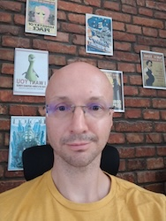

Ivan Štajduhar, D.Sc.

University of Rijeka
Faculty of Engineering
Department of Computer Engineering
Vukovarska 58, 51000 Rijeka, Croatia
+385 51 651 448, fax +385 51 651 435
ivan.stajduhar@uniri.hr
Machine Learning Laboratory @AIRI
Artificial Intelligence Laboratory @RITEH
Courses currently taught:
Introduction to Artificial Intelligence (bachelor)
Machine Learning (master)
Advanced Algorithms and Data Structures (master)
Applied Machine Learning (doctoral)
Biomedical Image Analysis (doctoral)
Recent projects and collaborations:
Building a Multimodal Foundation Model for Medical Radiology, University of Rijeka grant uniri-iskusni-tehnic-23-12 2947 (2024-)
Optical Diagnostics of Dermal Infections (OPTIDERM), bilateral research project funded by Croatian Science Foundation (IP-2022-10-2433) and Slovenian Research Agency (N3-0348) (2023-2027)
Network for implementing multiomics approaches in atherosclerotic cardiovascular disease prevention and research (AtheroNET), COST Action CA21153 (2022-2026)
Transversal Skills in Applied Artificial Intelligence (TSAAI), Erasmus+ 2021-1-ES01-KA220-HED-000030125 (2022-2025)
Summer School on Image Processing SSIP 2021
Machine Learning for Knowledge Transfer in Medical Radiology (RadiologyNET), Croatian Science Foundation research project IP-2020-02-3770 (2021-2024)
European Network for assuring food integrity using non-destructive spectral sensors (SensorFINT), COST Action CA19145 (2020-2024)
Adria Smart Room, HAMAG-BICRO KK.01.2.1.02.0303 (2020-2023)
Hyperspectral Image Analysis Using Machine Learning and Adaptive Data-Driven Filtering, bilateral project in cooperation with the Medical Physics Group at the Faculty of Mathematics and Physics, Ljubljana, Slovenia (2020-2022)
Development of machine-learning-based techniques for illness and injury detection in medical images, University of Rijeka grant uniri-tehnic-18-15 (2019-2023)
Computer-aided digital analysis and classification of signals, University of Rijeka grant uniri-tehnic-18-17 (2019-2023)
A network for gravitational waves, geophysics and machine learning (g2net), COST Action CA17137 (2018-2023)
Thorax motion supervision in radiotherapy using machine learning techniques, bilateral project in cooperation with the Medical Physics Group at the Faculty of Mathematics and Physics, Ljubljana, Slovenia (2018-2019)
kneeMRI dataset
Research interests:
Developing predictive models for biomedical data using machine learning
|